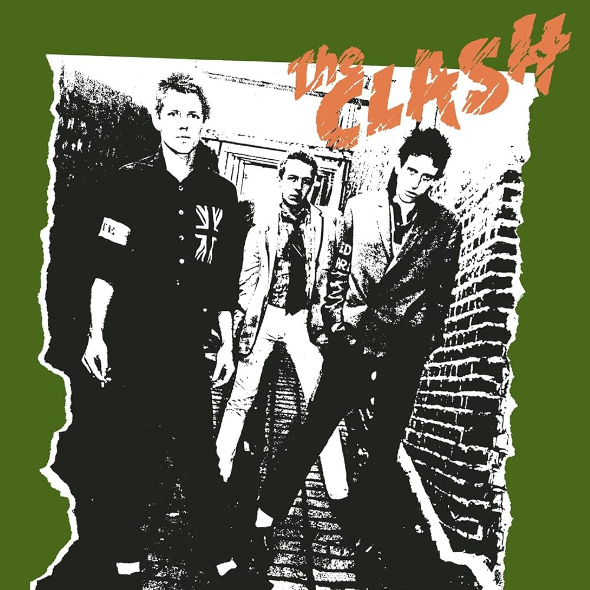
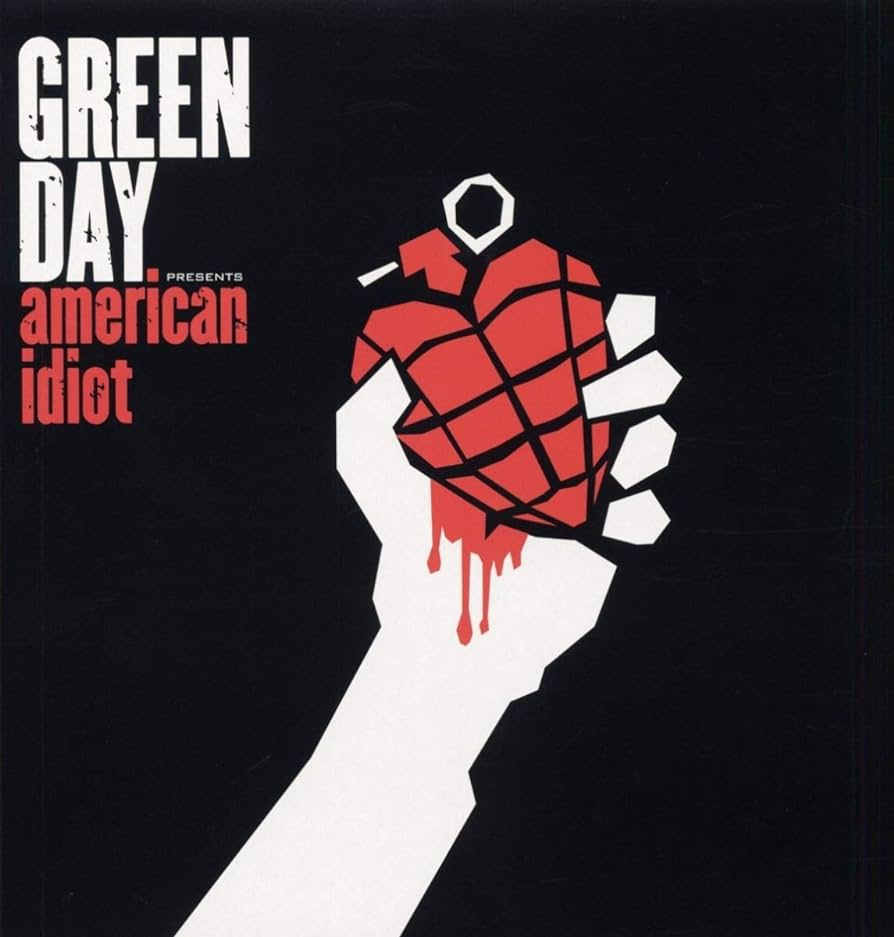
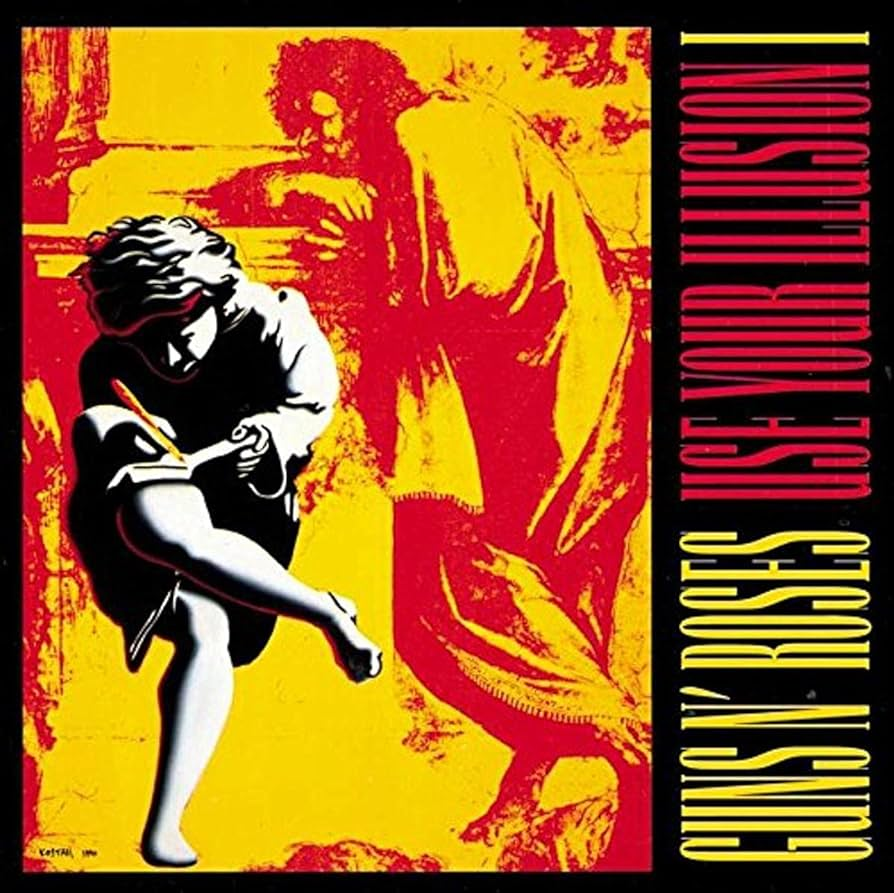
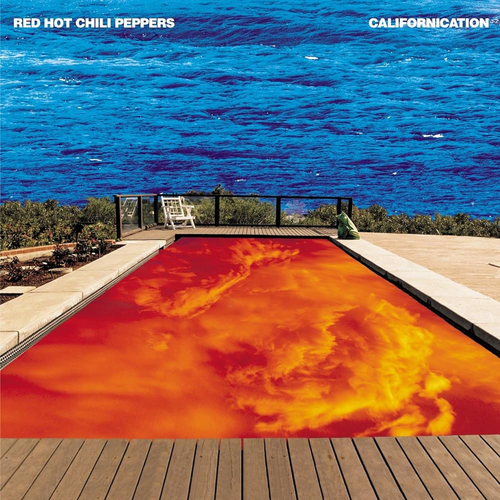
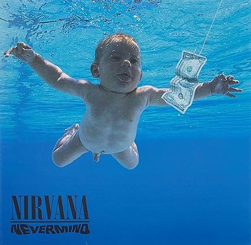

Diseño de edición limitada en National Album Day, The Clash LP ha recibido un re-styling con vibrante vinilo transparente. Originalmente lanzado el 8 de abril del 1977, este álbum es conocido como uno de los mejores álbumes de Rock & Roll de todos los tiempos. Cuenta con temas como 'White Riot', 'Janie Jones' y 'Police & Thieves'. Sony Music, 2016.
21.50€
Añadir al carrito
La ley innata” fue el noveno álbum de estudio de Extremoduro, y un disco sorprendente por su concepto y su interpretación. Su primer sencillo fue "Dulce introducción al Caos", y luego estaba seguido de varios “movimientos”. Se trata de un disco compuesto de una sola canción dividida en seis partes diferenciadas en pistas independientes. “Coda flamenca” o “Tercer movimiento: lo de dentro” sorprendieron por su sonido. El disco fue grabado acompañados por una sección de cuerda dirigida por Ara Malikian.
20.99€
Añadir al carrito

Edición en doble vinilo con carpeta desplegable de "American Idiot", séptimo trabajo de estudio de la banda californiana Green Day. Un álbum conceptual apodado "ópera punk rock" por los miembros de la banda.. "American Idiot" sigue la historia de Jesus of Suburbia, un antihéroe adolescente estadounidense de clase media baja.
26.46€
Añadir al carrito

Los Use Your Illusion I y II representan un punto de cambio en el sonido de Guns N' Roses. A pesar de no abandonar sus tendencias hard rock de su primer álbum Appetite for Destruction, Use Your Illusion I demostró, por primera vez elementos de blues, música clásica, heavy metal, punk rock, rock n' roll clásico hasta incluso de música industrial
27.00€
Añadir al carrito

Californication es el nombre del séptimo álbum de estudio de la banda estadounidense de rock alternativo y funk rock Red Hot Chili Peppers. Rick Rubin lo produjo y Warner Bros. Records lo lanzó al mercado el 8 de junio de 1999.
29,99€
Añadir al carrito

Nevermind es el segundo álbum de estudio de la banda estadounidense de grunge Nirvana, publicado en septiembre de 1991. Producido por Butch Vig, Nevermind fue el primer lanzamiento de la banda con DGC Records.
30,95€
Añadir al carrito